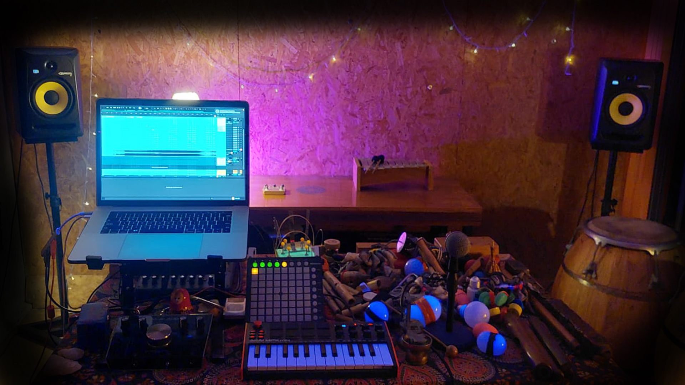

Ser parte del sonido.
Un espacio abierto donde personas con o sin experiencia musical crean colectivamente paisajes sonoros a través de la voz, la percusión, el cuerpo, la escucha, los instrumentos acústicos y las herramientas electrónicas.

Rodasampler es un laboratorio sonoro y un espacio de encuentro donde la improvisación, la escucha y el juego se convierten en herramientas para la creación colectiva.
Cada encuentro propone una experiencia de exploración en la que voces, percusiones, instrumentos, palabras y sonidos cotidianos se transforman en paisajes sonoros compartidos.
A lo largo del proceso, los encuentros también se vuelven taller: un espacio donde aprender, experimentar, descubrir y desarrollar nuevas formas de expresión a través del sonido.
Más que una actividad musical, Rodasampler es una invitación a escuchar, crear y ser parte del sonido.
Escucha, juego e improvisación alrededor de una mesa compartida.
Instrumentos de distintas culturas, objetos sonoros y herramientas electrónicas.
Un espacio abierto donde cada persona puede expresarse y aportar su propia voz a una creación colectiva.
Cada encuentro da origen a un paisaje sonoro único e irrepetible que se integra a un Tapiz de Memorias Sonoras.
Cada encuentro deja una huella.
Sonidos, imágenes, palabras y experiencias compartidas que continúan resonando más allá de la improvisación.
Las Memorias Sonoras conforman un archivo vivo en permanente construcción.
Javier Agustín Escudero es músico experimental y artesano sonoro nacido en Salta y radicado en Hurlingham, Buenos Aires.
Su trabajo explora la improvisación, el live looping, la escucha profunda, el paisaje sonoro y la relación entre tecnologías contemporáneas y músicas de raíz.
Es creador y coordinador de Rodasampler.
Instagram: @rodasampler
WhatsApp: 11 6547 5248
Hurlingham, Buenos Aires, Argentina